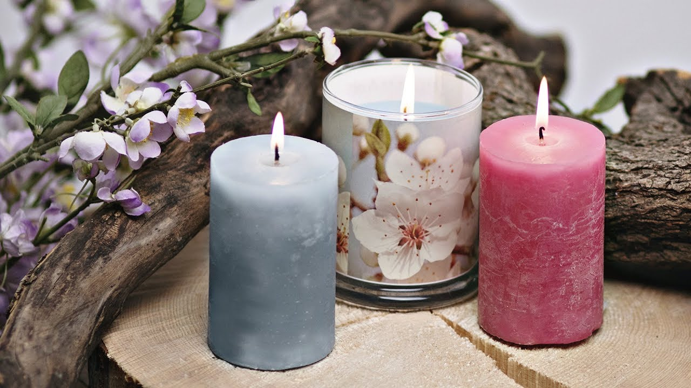
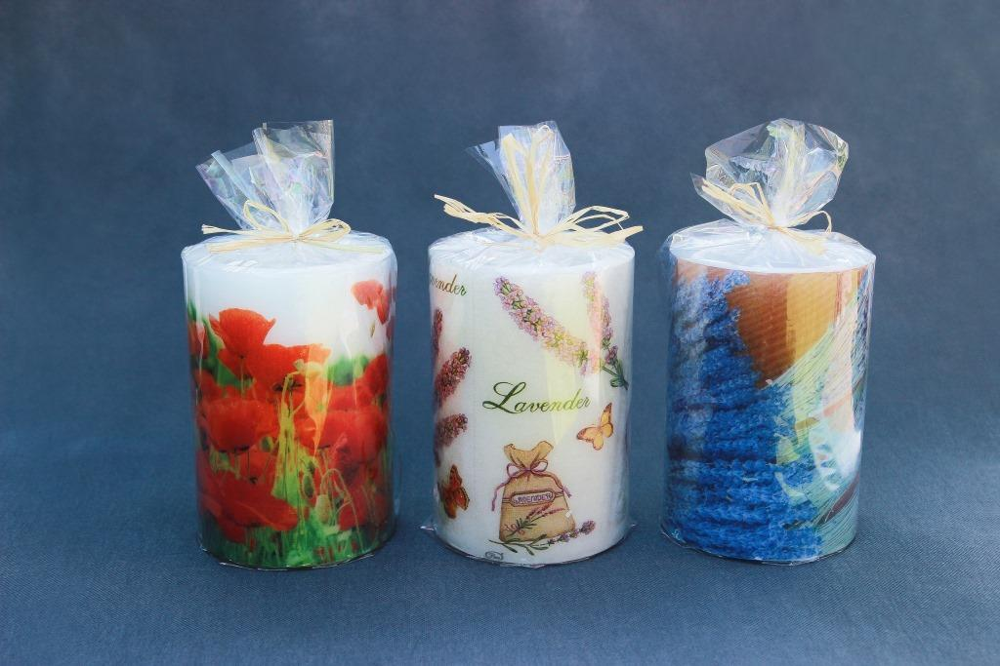

Dekoratyvinės žvakės
.jpg)
Zvakes, kurios pagamintos naudojant natūralų vašką ir yra nudažytos melsvais, augalines kilmes dažais,
yra tikra puošmena ir skleidžia malonią kvapą bei atmosferą bet kuriame namų kambaryje.
Šios rankų darbo zvakės yra unikalios ir sukuriamos su meile ir rūpestingumu
Zvakių gamyba prasideda nuo rūpestingai atrinkto natūralaus vaško, kuris suteikia joms ypatingą kokybę
ir ilgalaikį degimo laiką. Vaškas yra tvarsčiu pritaikomas ant specifinių molinių lekščių,
kurios suteikia zvakei unikalią formą ir dizainą. Po to, kai vaškas sustingo, pradedama naudoti melsvus dažus, kurių dėka zvakės gali įgyti žavią agalinių kilmių melsvą atspalvį. Šis procesas suteikia zvakei išskirtinumo ir grožio.
Kiekviena zvakė yra unikali, nes šios rankų darbo meistriškumo paslapčių ir kūrybiškumo
derinys užtikrina, kad kiekvienos zvakės forma, spalva ir kvapas bus ypatingi. Po kruopštaus dizaino proceso,
kiekviena zvakė yra apipilama keraminiais akmenukais, kurie prideda ne tik vizualios prabangos,
bet ir užtikrina, kad zvakė saugiai stovės ant paviršiaus.
Šios natūralaus vaško zvakės su melsvais agalinių kilmių dažais yra ne tik puošmena,
bet ir malonus kvapų šaltinis, kuris privers jūsų namus tapti jaukia ir raminančia vieta.
Jos yra puiki dovana, kuri atspindi kūrybiškumą ir prabangą. Su meile pagamintos zvakės suteiks jums
ypatingų akimirkų ir prisidės prie jūsų namų interjero grožio.

Žvakės iš natūralaus dažyto vaško yra tikra meninės meistriškumo išraiška,
kurioje kiekviena zvakė yra unikali ir puošiama įvairiais ornamentais. Gamindami šias žvakes,
mes naudojame tik aukščiausios kokybės natūralų vašką,
kuris suteikia joms išskirtinį stilių ir puikų degimo laiką.
Kiekviena žvakė yra rankų darbo kūrinys,
kuris atspindi mūsų meistrų kūrybiškumą ir aistringumą šia senovės menininkų praktika.
Pasitelkę skirtingas dažymo technikas ir spalvas,
mes pagraziname žvakes įvairiais ornamentais - nuo subtilių linijų ir figūrų iki sudėtingų raštų ir spalvotų dėmių.
Kiekviena žvakė yra švelni šviesos šaltinis, kuris suteikia jūsų interjerui ypatingą šilumą ir prabangą.
Jos ne tik papuošia jūsų namus, bet ir sukūrė jaukų ir raminantį atmosferą,
kuri skatina jūsų atsipalaidavimą ir poilsiu. Mes su meile gamindami kiekvieną žvakę,
kad galėtumėte patirti ypatingas akimirkas ir įsimintinas vakarus.
Savo žvakes galime pagaminti ir pagal jūsų individualius pageidavimus.
Taip pat siūlome įvairias žvakių formas ir dydžius, kurie atitiks jūsų skirtingus poreikius.
Būkite drąsūs ir įsigykite unikalias žvakes iš natūralaus dažyto vaško, kurios pridės grožio ir šilumos
jūsų namams. Suteikite sau malonumą mėgautis šių žvakių subtiliu kvapu ir jų elegancija,
kuri tikrai nepamirštama.

Žvakės iš parafino yra ypatingas pasirinkimas, kuriose meistriškai sumaišomi įvairūs komponentai,
kad būtų sukurta unikali ir ilgai deganti žvakė. Parafino žvakės yra labai populiarus pasirinkimas dėl savo
aukštos kokybės, ilgo degimo laiko ir gebėjimo puikiai išlaikyti formą.
Mūsų meistrai atidžiai paruošia ir maišo parafiną su įvairiais komponentais,
siekdami sukurti įvairių kvapų ir spalvų žvakes. Naudojame tik aukščiausios kokybės parafiną,
kad užtikrintume, jog žvakės degimo procesas būtų ilgas ir bekvapis. Mūsų žvakės yra gaminamos su meile ir rūpestingumu,
todėl kiekviena iš jų yra ypatinga ir privers jus mėgautis maloniu atmosfera jūsų namuose.
Po ilgo ir kruopštaus gamybos proceso, mūsų žvakės yra suformuojamos į stilingas ir unikalias formas.
Jos yra supakuojamos kaip tikros dovanos, kurios privers džiaugtis ne tik jos kvapu, bet ir vizualiai
patraukliu dizainu. Supakuotos žvakės yra puikus dovanų pasirinkimas jūsų artimiesiems ar draugams,
ir jos gali papuošti bet kokią vietą jūsų namuose.
Mūsų tikslas yra pasiūlyti jums aukščiausios kokybės žvakes,
kurios suteiks jūsų namams ypatingą atmosferą ir šilumą. Pasitikėkite mūsų meistriškumu ir pasiimkite
savo dovaną - mūsų unikalias žvakes iš parafino, kurios suteiks jums ir jūsų artimiesiems malonių
akimirkų ir džiaugsmo.